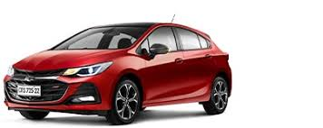
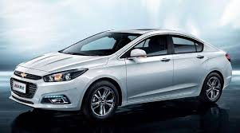
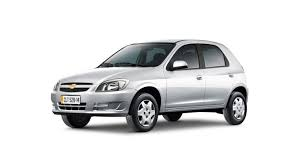
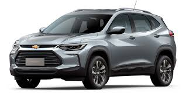

O Onix Joy 2019 O modelo queridinho da Chevrolet possui 3.930 mm de comprimento, 1.474 mm de altura, 1.705 mm de largura e 2.538 mm entre os eixos. Já o vão livre do solo tem 117 mm. O veículo tem um peso final de 1.011 kg e suporta 375 kg de carga útil.
Encontre aqui os melhores carros usados e zero quilômetro.
Confira nossa seleção de carros disponíveis para venda.
|

Cruze Sport6 RS Surpreenda-se com o motor turbo flex com 153 cv de potência, 24,5 kgf.m de torque, sistema de injeção direta de combustível e câmbio automático de seis marchas. A central eletrônica do motor foi recalibrada pra dar respostas mais rápidas às pisadas no acelerador e os amortecedores ficaram mais firmes. |

Descrição do Carro 2 |
|

Chevrolet Celta Potência de 70 cv, e torque máximo de 8,8 kgfm. Câmbio manual de 5 marchas e tração dianteira. Freios à disco, suspensão dianteira independente tipo McPherson e mola helicoidal. Consumo na cidade 13,3 km/l e na estrada 17,7 km/l |

Chevrolet Tracker O motor 1.0 conta com até 116 cv de potência com torque máximo de 16,8 kgf. m. O veículo atinge velocidade máxima de 177 km/h e aceleração de 0 a 100 km/h em 10,5 segundos. Á o propulsor 1.2 entrega 133 cv de potência com torque máximo de 21,4 kgf. |
Além de venda de carros, oferecemos serviços de manutenção e reparo.
Serviços Chevrolet Agendar Serviço OnStar
Acessórios Revisão Road Service
MyLink Recalls Recall Airbag Takata
Últimos Recalls Manuais De Proprietários Proconve
Manuais de Resgate Programa de Rotulagem Veicular Tutoriais
Chevrolet AcessiLab
Endereço: Rodovia BR-116, Km 399, 6490 - Tarumã, Curitiba - PR, 82590-300, Brasil
Horas: Aberto ⋅ Fecha às 19:00
Telefone: +55 41 3360-7000
Entre em contato conosco para obter mais informações.